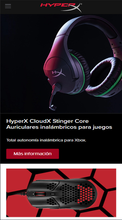
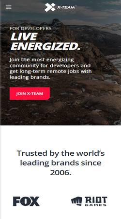
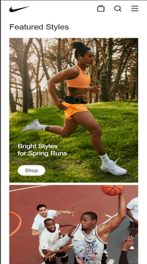

Contrast
Hyper X
https://www.hyperxgaming.com/en

HyperX is one of the top sellers on gaming gear such as headphones,
keyboards, desktop mouses, chairs, etc. In this website we can appreciate
the constrast applied in buttons, text, and in the logo itself. The correct
use of constrast in this case allows HyperX to showcase their products
without compromising readability.
White Space
X-Team
https://x-team.com/

X-Team is a company dedicated to recruit developers into teams, who later
will provide services to famous companies like Riot Games, Fox, Dell, Sony,
etc. White space is appreciated in the design; thus creating relationships
between elements, creating visual hierarchy and improving the user
experience.
Alignment
Nike
https://www.nike.com/

Nike is one of the most famous fashion brands all over the world. The
desing of its website is perfect example of horizontal and vertical
alignment. This improves the user experience while visitors explore
its merchandise.